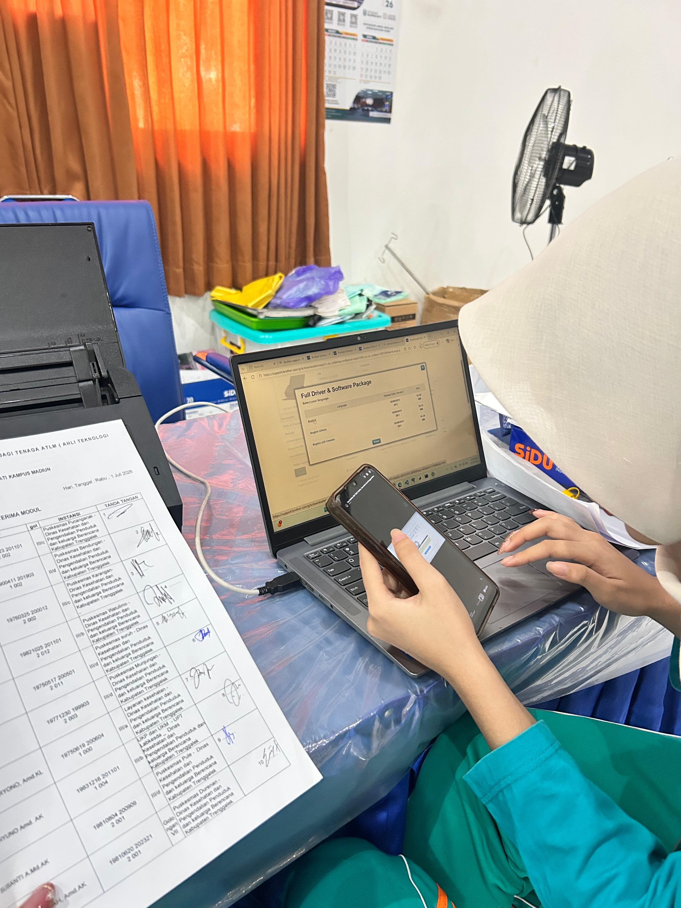
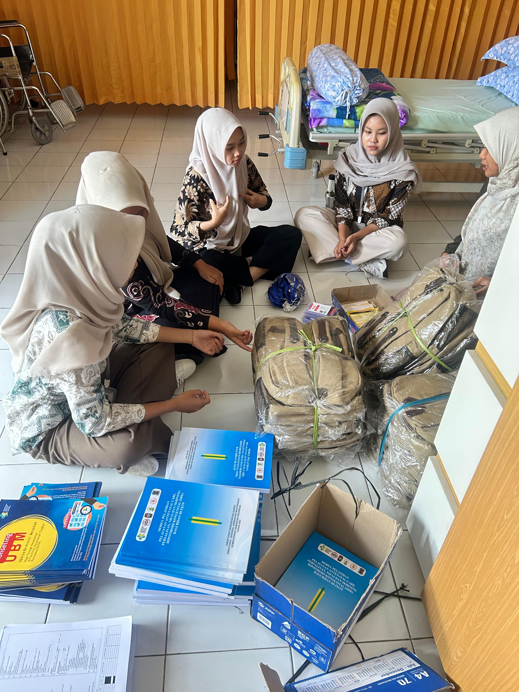
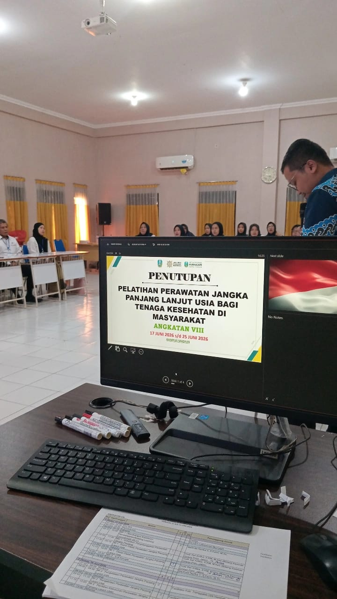
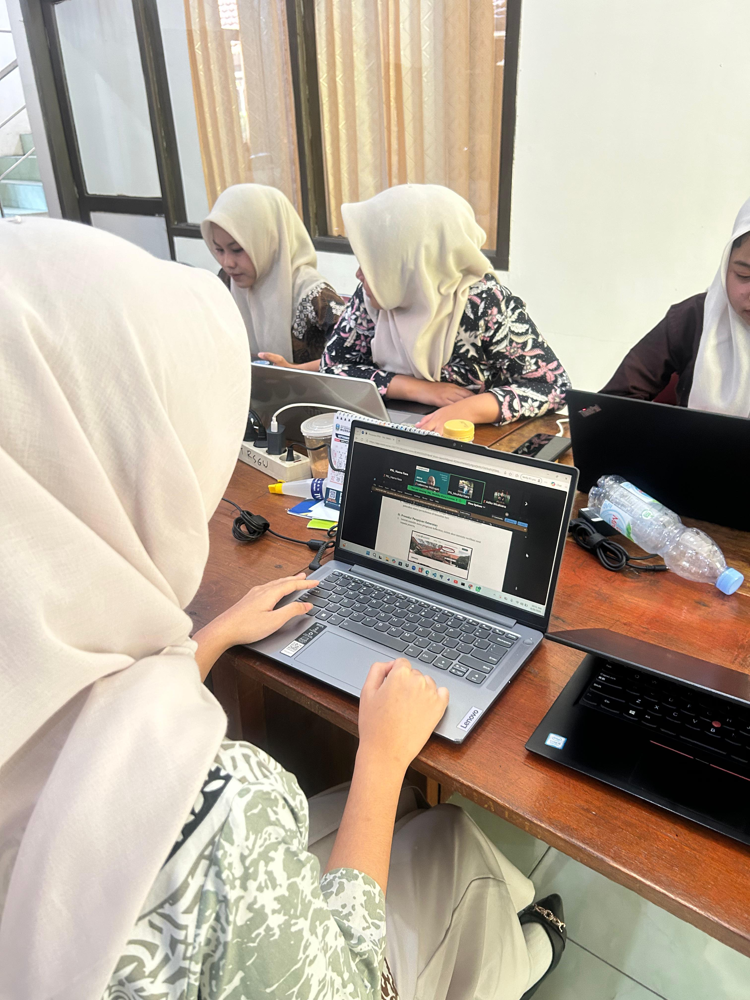

Siswi Kelas XII
Peserta didik aktif, sedang menempuh uji kompetensi keahlian sebagai pembuktian kesiapan kerja.
portofolio febri / beranda
Rekayasa Perangkat Lunak, SMKN 1 Jenangan Ponorogo
Ini adalah profil diri saya, berisi latar belakang, pendidikan, proyek yang pernah saya kerjakan, serta kemampuan yang telah saya pelajari selama menempuh jurusan Rekayasa Perangkat Lunak.

Saya siswi Rekayasa Perangkat Lunak (RPL) di SMKN 1 Jenangan Ponorogo. Selama masa pembelajaran, saya telah menyelesaikan beberapa proyek pemrograman skala kecil sekaligus memahami dasar-dasar logika pemrograman, struktur data, dan pengembangan web. Saya terbiasa beradaptasi dengan cepat, senang bekerja dalam tim, dan berkomitmen untuk terus mengasah kemampuan teknis. Halaman ini saya buat untuk mendokumentasikan jati diri, riwayat belajar, dan karya yang telah saya buat.
prinsip.visiSaya percaya bahwa kemampuan teknis terbaik dibangun dari kebiasaan belajar yang konsisten dan mau memperbaiki kesalahan sendiri. Visi saya adalah terus berkembang menjadi web developer yang tidak hanya bisa menulis kode, tapi juga memahami kebutuhan pengguna di baliknya.
Peserta didik aktif, sedang menempuh uji kompetensi keahlian sebagai pembuktian kesiapan kerja.
Program keahlian Rekayasa Perangkat Lunak (RPL).
Front-end & back-end dasar: HTML, CSS, JavaScript, PHP, serta pengelolaan basis data PostgreSQL.
Riwayat pendidikan formal, disusun dari yang terbaru.
Jurusan Rekayasa Perangkat Lunak (RPL).
Pendidikan menengah pertama. /p>
Pendidikan dasar.
Pengalaman belajar, organisasi, dan kerja di luar proyek teknis. Untuk pengalaman proyek, lihat bagian Proyek.
Mengembangkan website PPID menggunakan PHP dengan framework CodeIgniter 4. Berkontribusi dalam pembuatan database, antarmuka website, fitur CRUD informasi publik, form permohonan informasi dan keberatan, serta melakukan pengujian sistem.
Bertanggung jawab merancang dan menyelenggarakan kegiatan sekolah yang berkaitan dengan pengembangan seni, bakat, dan kreativitas siswa.
Website dinamis untuk usaha batik tulis, mencakup katalog produk yang terhubung ke database, halaman detail produk, serta panel admin untuk mengelola data produk.
Stack: PHP, PostgreSQL, HTML, CSS
Buka website usahaProgram berbasis C++ untuk mencatat transaksi pada toko online sederhana, mencakup input data barang, perhitungan total belanja, dan pencetakan struk transaksi.
Stack: C++
Latihan membangun website yang menghubungkan tampilan antarmuka (frontend) dengan pengolahan data di sisi server (backend).
Stack: HTML, CSS, JavaScript
Tingkat kemampuan saat ini:
Sertifikasi dan pencapaian yang saya kumpulkan selama menempuh jurusan Rekayasa Perangkat Lunak.
Gamelab Indonesia & Educa Studio · 5 Januari 2026
Digital Talent Academy (Komdigi) · Digital Talent Scholarship 2026
SMP · Masa SMP




Catatan singkat dari proses belajar saya.
Pengalaman pertama menyambungkan form pada halaman web ke basis data menggunakan PDO, mulai dari setup koneksi sampai menampilkan data produk secara dinamis.
Lihat proyeknya →Refleksi tentang pentingnya struktur folder yang rapi, penamaan class CSS yang konsisten, dan kebiasaan menguji tampilan di berbagai ukuran layar.
Lihat kemampuan terkait →Cerita singkat tentang ketertarikan saya pada logika pemrograman sejak awal masuk SMK dan alasan memilih fokus di pengembangan web.
Baca profil saya →Informasi kontak yang bisa dihubungi jika ingin berdiskusi atau bekerja sama.